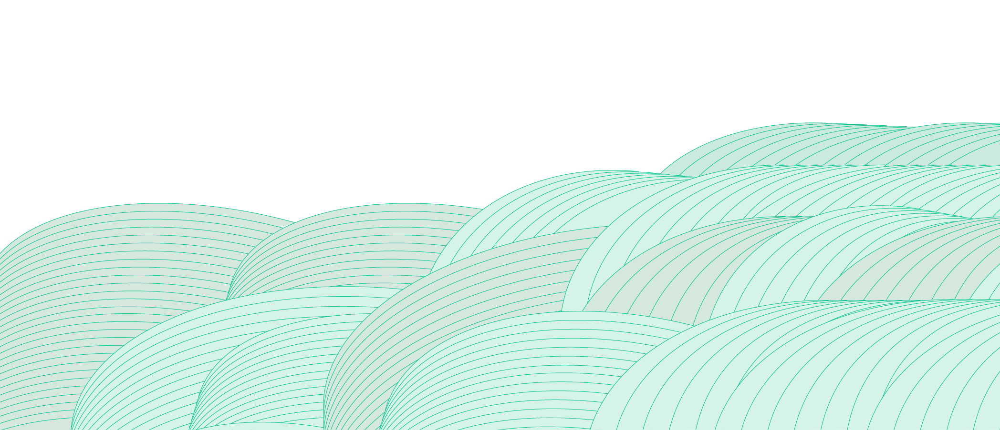
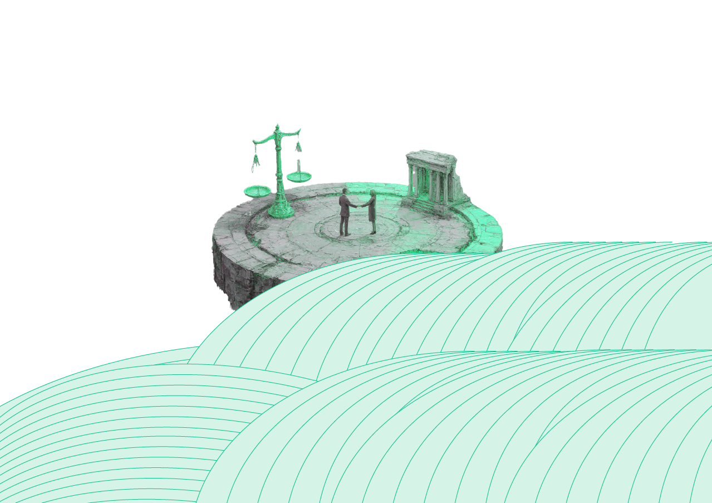

Beyond Disputes,
Toward Resolution.
복잡한 문제를 명확한 전략으로,
분쟁을 실질적인 해결로
변호사 김용석 법률사무소 철학
Fides
신뢰
변호사는 의뢰인에게 신뢰를 줄 수 있어야 합니다. 그 신뢰를 바탕으로 의뢰인이 속한 사실관계를 정확하게 파악하고, 법리를 적용하여 결과를 도출해 낼 수 있습니다.
Sympathía
공감
변호사는 의뢰인의 상황에 대하여 이성적, 감성적으로 공감해야 합니다. 공감을 통해 의뢰인의 입장에서 사건의 실체를 정확하게 파악하여 해결책을 제시할 수 있습니다.
Veritas
진실
변호사는 진실을 탐구해야 합니다. 의뢰인이 주장하는 실체적 진실 을 주장하고, 입증함으로써 의뢰인의 이익이 보장될 것입니다.
Experience That Leads to Better Solutions
수많은 사건을 통해 쌓은 경험으로, 당신의 문제에 더 나은 해결책을 제시합니다.
비슷한 고민, 어떻게 해결했을까요?
김용석 변호사가 직접 해결한 다양한 사건 중에서
처한 상황과 비슷한 사례를 찾아보세요.